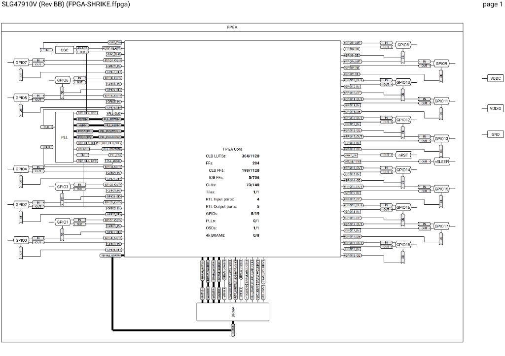
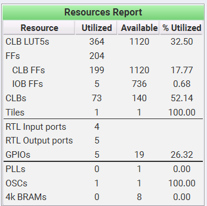
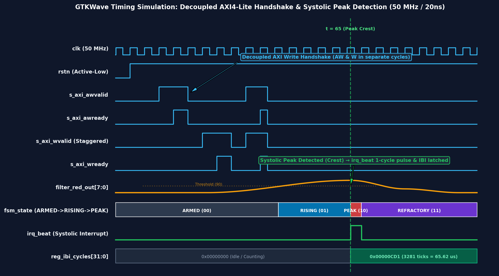

Project Title: AI-Powered Personal Health Companion & Edge Disaster Monitor
Challenge: Qualcomm Hardware Challenge — Smart India Hackathon 2026 (Problem SIH26181)
Target Platforms: Xilinx Zynq-7000 (Reference Baseline) ➔ Renesas ForgeFPGA + ESP32-S3 ShrikeFi (Ultra-Low-Cost Wearable) ➔ Qualcomm Snapdragon Wear / QCS6490 (Commercial Road-map)
If you have 3 minutes to pitch this to a panel of judges, hit these exact points in this order:
In 2024 alone, extreme heatwaves in India claimed over 700 lives in just three months, while 380 million outdoor workers (75% of the national workforce) faced severe risk of heatstroke, acute kidney injury, and lost wages. Current early-warning systems only monitor the environment (e.g., weather apps or city air monitors), leaving vulnerable outdoor workers guessing how much physiological danger their own bodies are actually in.
Problem SIH26181 calls for innovative hardware architectures leveraging Qualcomm platforms for societal impact. We built a hardware-accelerated, edge-AI wearable that acts as a personal disaster shield. It proves custom silicon offloading while solving a massive humanitarian crisis: protecting vulnerable populations during heatwaves, toxic smog, and flood immersion 100% offline with zero cloud dependency.
(HARDWARE WOW-FACTOR): Most hackathon health wearables run everything in software on a standard microcontroller. We went much deeper: we designed custom digital hardware circuits in synthesizable Verilog that filter noisy optical signals and extract heartbeat intervals physically at the silicon gate level, taking 0 DSP slices and 0 Block RAM.
If asked why this isn't just another Arduino/Raspberry Pi project, use these 4 core differentiators:
while() loop, suffering 5–20 ms of OS scheduling jitter that ruins Heart Rate Variability (HRV). We wrote custom Verilog RTL to move signal filtering and systolic peak detection directly into physical FPGA hardware. The crest is located to a 20-nanosecond clock edge in synchronous logic, with no operating system in the loop — so the detection has no OS jitter at all. (Be precise about the next step: the interval between those hardware-detected beats is then timed by the ESP32's 1 µs hardware timer, because the FPGA does not transmit a cycle count over the link. Detection: 20 ns, jitter-free. Interval timing: 1 µs, still 10,000× finer than the RTOS tick.)ROADMAP.md lists thermal-chamber testing to validate it as future work. Present it as a design goal, not a delivered capability."We have validated our custom hardware on the Xilinx Zynq-7000 baseline, deployed an ultra-affordable wearable architecture (prototype cost ~$51: ~$11.50 for the integrated ShrikeFi ForgeFPGA/ESP32 board + ~$40 sensors, projected <$20 at-scale bulk manufacturing BOM) on the ShrikeFi platform, and mapped the full migration path to Qualcomm Snapdragon Wear."
A common question from technical judges is: "Why does your repository have both Xilinx Zynq-7000 and Renesas ForgeFPGA (ShrikeFi) implementations?"
Here is the exact story and rationale to present:
+-----------------------------------------------------------------------------------+
| THE TWO-TARGET HARDWARE STORY |
+-----------------------------------------------------------------------------------+
| 1. XILINX ZYNQ-7000 (Reference Baseline) |
| - Role: High-End Prototyping & Cycle-Accurate Verification |
| - Target Part: xc7z020clg400-1 (Vivado ML 2022.2) |
| - Performance: Timing closed @ 69.45 MHz (WNS +5.603 ns, WHS +0.184 ns) |
| - Interconnect: 32-bit AXI4-Lite Memory-Mapped Bus |
| - Purpose: Proved silicon math & zero DSP/BRAM footprint |
| |
| ▼ |
| |
| 2. RENESAS ForgeFPGA + ESP32-S3 (ShrikeFi Target) |
| - Role: Mass-Deployable, Ultra-Low-Cost (<$20 at-scale BOM) Pocket Wearable |
| - Target Part: SLG47910C (1120 5-input LUTs) + Dual-Core ESP32-S3 |
| - Utilization: Only 363 / 1120 LUT5s (32.41%), 202 FFs, 75 CLBs, 0 DSP, 0 BRAM |
| - Interconnect: Full-duplex 8-bit SPI, Mode 0 (1 MHz runtime; 16 MHz for FPGA configuration)|
| - Purpose: Proved commercial feasibility for millions of workers |
| |
| ▼ |
| |
| 3. QUALCOMM SNAPDRAGON WEAR (Commercial Road-map) |
| - Role: Mass-Market Integrated Smartwatch SoC (QCS6490 / Snapdragon Wear) |
| - Hardware Blocks: Hexagon DSP (PPG filtering) + NPU (INT8 TinyML Model) |
+-----------------------------------------------------------------------------------+
hardware/common/ is 100% vendor-agnostic and synthesized directly onto both Xilinx (6-input LUTs) and Renesas (5-input LUTs).On the Zynq SoC, the ARM Cortex-A9 CPU communicates with the FPGA fabric over an AMBA AXI4-Lite memory-mapped bus (0x43C00000):
* Direct Register Map: REG_RED_RAW (0x00), REG_RED_FILTERED (0x04), REG_IBI_CYCLES (0x08), REG_STATUS_THRESH (0x0C).
* Decoupled Handshake: Independent Address Write (AW) and Data Write (W) channels prevent interconnect deadlocks.
* Write-1-to-Clear (W1C): Bit [0] of REG_STATUS_THRESH latches when a heartbeat occurs and clears atomically on write, eliminating CPU race conditions.
The Renesas ForgeFPGA is a compact chip with limited I/O pins. A 32-bit AXI bus is physically impossible. The link is a 4-wire SPI bus in mode 0 (CPOL = 0, CPHA = 0), MSB first, with the ESP32-S3 as controller and the ForgeFPGA as target:
Figure note:
images/shrikefi_pinout.pngpredates the SPI link and cannot be verified from the repository (it is a raster with no searchable labels). The pin table in../SHRIKEFI_LINK_PROTOCOL.mdis authoritative; regenerate this figure from it before reuse.
SCK — GPIO12 → PIN_16 (spi_sck): SPI clock, generated by the ESP32-S3.SS_n — GPIO10 → PIN_17 (spi_ss_n): active-low chip select, driven manually around each transaction (.spics_io_num = -1).MOSI — GPIO11 → PIN_18 (spi_mosi): MCU → FPGA. Carries the raw 8-bit PPG sample.MISO — GPIO13 → PIN_19 (spi_miso + PIN_19_OE): FPGA → MCU. Carries {beat_latched, filt_sample[6:0]}.EN), GPIO9 = FPGA power (PWR). led_user is PIN_7; OSC_EN is the oscillator enable — a clock resource, not a GPIO.Stale-protocol warning. Earlier revisions of this section described a "4-bit parallel nibble link" with a
link_strobe, alink_dir, a 4-bitlink_databus, afpga_irqpin and a0x1–0x8command codebook. That design was retired before it was ever built. There is no strobe, no direction line, no separate interrupt pin, no command map and no command decode in the RTL or the firmware. Do not present it. If a judge asks why the docs contain it, the honest answer is: the interface was redesigned to SPI before implementation, and this file retained the old description for too long.
SS_n low on GPIO10.SS_n high.spi_target module (hardware/shrikefi/forgefpga_ppg_top.v) shifts the received byte into rx_data, and the 8-tap moving-average filter consumes it on rx_valid.[7] = beat_latched — set by the peak detector on a systolic crest, cleared once it has been shifted out.[6:0] = the low seven bits of the 8-tap average. The FPGA's own detector uses the full 8-bit value internally, so detection is unaffected by the truncation.ibi_cycles internally, but no SPI register carries it and the firmware never reads it. The MCU derives the inter-beat interval from its own esp_timer_get_time() deltas between rising beat flags.SS_n toggled per chunk.Figure removed. The waveform that used to appear here was drawn for the retired 4-bit parallel nibble bus and shows signals (
link_strobe,link_dir,irq_beat, a 4-bit data bus) that do not exist in this design. The real frame is one 8-bit full-duplex SPI transaction per sample — see §3 and../SHRIKEFI_LINK_PROTOCOL.md.
The ESP32-S3 contains two Xtensa LX7 cores running at 160 MHz (the configured frequency — CONFIG_ESP_DEFAULT_CPU_FREQ_MHZ=160; the LX7 is capable of 240 MHz but we do not run it there). We strictly partitioned the tasks using FreeRTOS core pinning:
+------------------------------------+ +------------------------------------+
| CORE 0: ACQUISITION | | CORE 1: INTELLIGENCE & UI |
| (The Dedicated Paramedic) | | (The AI Chief Physician) |
+------------------------------------+ +------------------------------------+
| • ~100 Hz MAX30102 Optical Sampling| | • BME280 (Temp/Hum) & PMS5003 |
| • 8-Bit SPI Link Streaming | | • INT8 Quantized TinyML Inference |
| • Beat-Flag Capture (1 µs timer) | | • Rule Engine (CTSI / PRSI Risk) |
| • Rolling HRV Calculation (RMSSD) | | • SSD1306 OLED Real-Time Display |
+------------------------------------+ +------------------------------------+
│ ▲
└─────── Thread-Safe Mutex Queue ─────────┘
Digital hardware circuits do not "execute instructions" like C code or Python. They are physical arrays of logic gates, flip-flops, and wires operating simultaneously at 50,000,000 clock cycles per second.
RAW PPG SAMPLES (~100 Hz)
│
▼
+───────────────────────+
| moving_average_8tap | <--- 8-Tap O(1) Running Sum Filter
| (No DSP, No BRAM) | Smooths wrist motion artifacts
+───────────────────────+
│
▼
+───────────────────────+
| ppg_peak_detector | <--- 4-State Systolic FSM
| (20 ns Resolution) | Armed -> Rising -> Peak -> Refractory
+───────────────────────+
│
┌───────────────┴───────────────┐
▼ ▼
[ ZYNQ-7000 TARGET ] [ SHRIKEFI TARGET ]
axi_ppg_accelerator.v forgefpga_ppg_top.v
(32-bit AXI4-Lite Bus) (8-Bit SPI, Mode 0)
moving_average_8tap.v (hardware/common/ — The Smart Filter):Why it's clever: A standard filter adds 8 numbers every time. Our $O(1)$ running-sum filter only subtracts the oldest sample and adds the newest sample, using a simple bit-shift (>> 3) instead of a divider. Takes 0 DSP multiplier slices and executes in 1 clock cycle (20 ns).
ppg_peak_detector.v (hardware/common/ — The Systolic Peak Radar):
ibi_cycles register. What it does not do is hand that count to the MCU: no SPI register carries it, so on the shipped link the interval is timed by the ESP32's esp_timer_get_time() (1 µs) between rising beat flags.The 4-State Flowchart:
STATE_ARMED (00): Waiting for the signal to rise above the dynamic threshold (reg_threshold).STATE_RISING (01): Tracking the rising slope. To filter out quantization noise, it requires two consecutive decreasing samples before confirming the local maximum.STATE_PEAK_FOUND (10): Captures the exact clock cycle count, sets beat_detected (which the top level latches into MISO bit 7), and resets the timer.STATE_REFRACTORY (11): Enforces a 250 ms blanking window so the dicrotic notch does not trigger a false second heartbeat. Crucially, the signal must also drop back below the dynamic threshold before re-arming, preventing false triggers on elevated baselines.axi_ppg_accelerator.v (hardware/zynq/ — The Zynq AXI4-Lite Wrapper):
What it does: Memory-mapped AXI4-Lite slave wrapper for the Xilinx Zynq-7000 SoC (0x43C00000), providing register-level access (REG_RED_RAW, REG_IBI_CYCLES, REG_STATUS_THRESH) and Write-1-to-Clear interrupt management.
forgefpga_ppg_top.v (hardware/shrikefi/ — ShrikeFi Top-Level Gateway):
spi_target), the 8-tap moving-average filter, the systolic peak detector, and the beat-latch/SPI-response register inside the Renesas ForgeFPGA (SLG47910). There is no link transceiver FSM, no command decoder and no nibble reassembler — an older revision of this file claimed all three.rx_data/rx_valid for the filter, and shifts {beat_latched, filt_sample[6:0]} back out on MISO. Simple shift logic, not a protocol state machine.beat_latched when the peak detector fires and clears it once the byte has been transmitted, so the flag is guaranteed to reach the MCU exactly once per beat.PIN_13), so the top level holds rst_n low for POR_CYC clocks from an internal counter instead of trusting an external line or the fabric's power-up state.Protocol note, for anyone reading an older copy of this file. The resource figures above are current for the shipped SPI design. Any version of this file that mentions a nibble bus, a
link_strobe, alink_dir, alink_dout, anfpga_irqpin or aCMD_*opcode is carrying retired 4-bit parallel-link material that was never built — the interface was redesigned to SPI before implementation. Every such passage in this revision has been rewritten; if you find one that has not, it is stale. Seehardware/shrikefi/README.mdandhardware/shrikefi/forgefpga_pins.pcf.


A major difference between academic hackathon toys and real silicon engineering is timing determinism. This section provides a comprehensive, signal-by-signal dissection of our hardware waveforms for both platforms—giving you the exact explanation to deliver when a judge points at any signal on the oscilloscope or GTKWave simulation trace.
The Zynq simulation captures the full system lifecycle: AXI register configuration, decoupled bus handshaking, 8-tap running-sum noise filtering, and cycle-accurate heartbeat interval timestamping.

| Signal Name | Direction / Type | Clock Domain | Engineering Role & Behavior in Waveform |
|---|---|---|---|
clk |
Input (50 MHz) | Core Clock | Master clock source ($T = 20.000\text{ ns}$). Every flip-flop in the accelerator updates on the rising edge of this clock. |
rstn |
Input (Active-Low) | Synchronous | System reset line. Held low for first 4 cycles ($t = 0 \to 80\text{ ns}$) to reset FSM states, clear sample FIFOs, and zero the interval timer. |
s_axi_awvalid |
Input (AXI AW) | clk |
Address Write Valid. Asserted by CPU when sending a target register address (e.g., 0x0C for threshold or 0x00 for PPG raw sample). |
s_axi_awready |
Output (AXI AW) | clk |
Address Write Ready. Asserted by our accelerator to acknowledge that the address was latched into aw_addr_latched. |
s_axi_wvalid |
Input (AXI W) | clk |
Data Write Valid. Asserted by CPU when presenting 32-bit write data on s_axi_wdata. |
s_axi_wready |
Output (AXI W) | clk |
Data Write Ready. Asserted by accelerator to acknowledge that write data was latched into w_data_latched. |
filter_red_out[7:0] |
Internal / Reg | clk |
Continuous 8-tap moving-average output. Shows optical noise reduction as raw stepped input samples are smoothed into a clean physiological pressure wave. |
fsm_state[1:0] |
Internal / State | clk |
Systolic Peak Radar state: ARMED (00) $\to$ RISING (01) $\to$ PEAK_FOUND (10) $\to$ REFRACTORY (11). |
irq_beat |
Output (Direct Pin) | clk |
Hardware Interrupt Pulse. Generates an exact 1-clock-cycle pulse (20 ns) at $t = 65\text{ cycles}$ the instant the wave reaches local maximum (sample < prev_sample). |
reg_ibi_cycles[31:0] |
Output / Reg | clk |
Inter-Beat Interval (IBI) register. Latches the counter value (0x00000CD1 = 3281 clock ticks = $65.62\text{ µs}$) and resets interval timer to zero. |
AW) and data (W) in a rigid order, an out-of-order interconnect crossbar will stall and hang the entire ARM bus.s_axi_awvalid pulses first at $t = 12$, but s_axi_wvalid is staggered and arrives 12 cycles later at $t = 24$.aw_done and w_done latch independently. Only when both flags are high does write_execute fire, updating the target register and returning s_axi_bvalid = 1 (OKAY response).STATE_ARMED): The wave is below the programmable threshold (reg_threshold = 120). The detector ignores all baseline motion noise.STATE_RISING): The filtered PPG signal crosses above threshold 120. The FSM tracks the rising slope and requires two consecutive decreasing samples to confirm a peak, eliminating single-sample noise glitches.STATE_PEAK_FOUND): The true peak is confirmed. The FSM asserts irq_beat = 1, copies interval_cnt to ibi_cycles, and resets the timer.STATE_REFRACTORY): The FSM enters a 250 ms blanking window (REFRACTORY_CYC = 12,500,000 cycles at 50 MHz). The signal must also completely drop back below the threshold before re-arming, preventing false triggers.On the ultra-low-cost ShrikeFi platform there is no 32-bit bus. The ESP32-S3 and the ForgeFPGA exchange one 8-bit full-duplex SPI transaction per optical sample — mode 0 (CPOL = 0, CPHA = 0), MSB first, chip select driven manually by firmware.
Figure removed. The waveform that used to appear here was drawn for the retired 4-bit parallel nibble bus and shows signals (
link_strobe,link_dir,irq_beat, a 4-bit data bus) that do not exist in this design. The real frame is one 8-bit full-duplex SPI transaction per sample — see §3 and../SHRIKEFI_LINK_PROTOCOL.md.
| Signal Name | FPGA Pad | MCU Pin | Role & Signal Dynamics in Simulation |
|---|---|---|---|
clk |
— (OSC_EN) |
— | 50 MHz internal FPGA oscillator ($T = 20.000\text{ ns}$). clk_en drives OSC_EN; without it the core has no clock at all. |
rst_n |
(no pin) | — | Internal, not a pin. Generated by the top level's power-on counter (por_cnt == POR_CYC). There is no reset pad on the ShrikeFi interconnect — nothing drives PIN_13. |
spi_sck |
PIN_16 | GPIO12 | SPI clock generated by the ESP32-S3. Mode 0: MOSI/MISO are sampled on the rising edge, outputs shift on the falling edge. |
spi_ss_n |
PIN_17 | GPIO10 | Active-low chip select, driven manually by firmware around each 8-bit transaction. Held high between samples. |
spi_mosi |
PIN_18 | GPIO11 | MCU $\to$ FPGA: the raw 8-bit PPG sample, MSB first. |
spi_miso |
PIN_19 (+PIN_19_OE) |
GPIO13 | FPGA $\to$ MCU: {beat_latched, filt_sample[6:0]}, MSB first. |
filt_sample[7:0] |
Internal | — | Real-time 8-tap moving-average output inside the fabric. Only [6:0] reaches the wire; the FPGA's own detector uses all 8 bits. |
led_user |
PIN_7 (+PIN_7_OE) |
— | Blue user LED D12, held high for LED_PULSE_CYC (50 ms) after each detected beat. |
spi_ss_n low on GPIO10.spi_sck pulses. On every pulse the MCU shifts one bit out on MOSI and samples one bit in on MISO — one transaction, both directions.0x78 (120), MOSI carries 0 1 1 1 1 0 0 0, MSB first.spi_target latches rx_data = 0x78 and pulses rx_data_valid for one clock; the 8-tap moving-average filter consumes it.spi_ss_n high.beat_detected $\to$ the top level sets beat_latched <= 1'b1.{beat_latched, filt_sample[6:0]}. Because the MCU is already clocking that byte in, catching the beat costs nothing extra.beat_latched clears once the byte has been transmitted, so each beat appears on exactly one frame — no edge races, and no sticky interrupt register to acknowledge.filt_sample[6:0]. The RTL's internal 32-bit ibi_cycles register (the 0x00000CD1 = 3281 value shown in the Zynq waveform above) is never transmitted on ShrikeFi.shrikefi_link_driver.c records esp_timer_get_time() on each rising beat flag and differences consecutive readings, multiplying by 50 to express the result in 20 ns ticks (s_sim_ibi = delta_us * 50).Be precise about granularity here. Detection happens in hardware at 50 MHz, so the crest is located to a 20 ns clock edge and there is no scheduler jitter in the detection. The interval the firmware reports is quantised by the MCU's 1 µs timer. Claiming a 20 ns timestamp on the wire would be wrong, and a judge who knows SPI will catch it.
When presenting your timing diagrams, judges will probe your understanding with specific questions. Use these battle-tested responses:
irq_beat register asserting where filter_red crests and begins to decrease.filter_red_out reached its local maximum, and we waited for exactly two consecutive dropping samples to ensure it wasn't just quantization noise. Once confirmed, the systolic FSM set the beat flag, and the ShrikeFi top level latches it into MISO bit 7 so the MCU picks it up on the byte it is already clocking in."AW) and Data Write (W) at different times?"s_axi_awvalid pulsing at $t = 12$ and s_axi_wvalid pulsing at $t = 24$.aw_done and w_done status registers, our hardware guarantees zero deadlocks regardless of bus latency."{beat flag, filtered sample}. No opcode, no register address, no length negotiation. That is deliberate — with exactly one thing to say in each direction, a protocol would be pure overhead. Our earlier documentation described a 4-bit link with a 0x1–0x8 command codebook; that design was retired before it was implemented, which is why you may have seen it in an older deck."| Sensor | Vital Metric Measured | Why It Is Essential for Disasters |
|---|---|---|
| MAX30102 | Red & IR Photoplethysmography (PPG), Blood Oxygen (SpO2), On-Chip Die Temperature | Detects heart rate, Heart Rate Variability (HRV), hypoxemia from smoke inhalation, and skin microclimate cooling during flood immersion. |
| BME280 | Ambient Temperature (°C) & Relative Humidity (%) | Calculates the Steadman Heat Index. High humidity prevents sweat evaporation, causing lethal core temperature spikes even at 38°C. |
| PMS5003 | Fine Particulate Matter (PM2.5 in $\mu\text{g}/\text{m}^3$) | Measures microscopic smoke and dust particles small enough to penetrate lungs into the bloodstream during crop fires, smog, and wildfires. |
| SSD1306 | 128×64 Monochrome OLED Display | Provides real-time visual triaging (Green/Yellow/Orange/Red) directly on the worker's wrist without needing a paired phone or cellular signal. |
Our firmware features a Hybrid Risk Assessment Engine combining deterministic clinical rules with an ultra-fast INT8 Quantized Neural Network.
[ 6-INPUT SENSOR FUSION VECTOR ]
┌───────────────────────────────────────────────┐
│ 1. Heart Rate (BPM) 4. Ambient Temp (°C) │
│ 2. HRV RMSSD (ms) 5. Relative Hum (%) │
│ 3. SpO2 Saturation (%) 6. PM2.5 (ug/m3) │
└──────────────────────┬────────────────────────┘
│
┌────────────────┴────────────────┐
▼ ▼
┌──────────────────────────────┐ ┌──────────────────────────────┐
│ CLINICAL RULE ENGINE │ │ INT8 QUANTIZED TinyML NN │
│ (disaster_risk_engine.c) │ │ (nn_risk_model_int8.c) │
├──────────────────────────────┤ ├──────────────────────────────┤
│ • Cardio-Thermal Strain (CTSI│ │ • 6 -> 24 -> 16 -> 3 │
│ • Pollution Strain (PRSI) │ │ • INT8: 619 params, 576 MACs │
│ • Deterministic Safety Net │ │ • 0.44 µs/inference (x86-64) │
└──────────────┬───────────────┘ └──────────────┬───────────────┘
│ │
└───────────────┬─────────────────┘
▼
[ UNIFIED TRIAGE & ADVISORY OUTPUT ]
• Normal (Green) • High (Orange)
• Moderate (Yellow) • Critical (Red Alert)
disaster_risk_engine.c)Calculates medical indices developed specifically for occupational heat and smog strain: * Cardio-Thermal Strain Index (CTSI): Combines ambient heat index with cardiovascular drift ($\Delta\text{HR}$) and HRV collapse. If Heat Index > 54°C and HR > 130 BPM with RMSSD < 10 ms, flags CRITICAL HEAT RISK. * Pollution Respiratory Strain Index (PRSI): Fuses PM2.5 particulate concentration with blood oxygen desaturation. If PM2.5 > 300 $\mu\text{g}/\text{m}^3$ and $\text{SpO}_2 < 88\%$, flags CRITICAL POLLUTION RISK.
nn_risk_model_int8.c)firmware/core/nn_risk_model.h (NN_HIDDEN1_SIZE 24, NN_HIDDEN2_SIZE 16) and in train_nn_risk_model.py (IN, H1, H2, OUT = 6, 24, 16, 3). If you quote 123 bytes you are quoting a model that is not in the repository.-O2. That is the only figure anyone has measured. The ESP32-S3 target has not been timed, so do not say "under 1 microsecond on an ESP32-S3 or ARM CPU" — an older revision of this file did, and it was an assumption presented as a measurement.train_nn_risk_model.py synthesises 70,000 scenarios — 40,000 uniform, 10,000 clustered on class-boundary thresholds, 12,000 around named disaster archetypes, and 8,000 on the derived heat-index edges — then holds out 7,000 for validation (a 90/10 split; the script prints Dataset: 70000 samples (63000 train / 7000 val)). Older drafts quoted "62,000 scenarios" and a "6,200-scenario" validation set; those numbers are not in the script.--epochs, default 1200) — not "over 100 epochs".Use these exact analogies when explaining the project to non-technical judges or team members:
"Think of the microcontroller CPU as a brilliant CEO. If you force the CEO to manually inspect a hundred raw optical readings every second, they have to stop everything, do math, and burn battery. They become overwhelmed and have no time to make big decisions.
Instead, we used the FPGA fabric to build an automated factory conveyor belt. The raw light signals pass through our hardware filter and peak detector, which smooth the wave and flag each systolic crest in silicon — the crest is located to a 20 ns clock edge with no operating system in the loop. The belt hands the CEO one byte per sample with a beat flag on top; the CEO then reads its own microsecond timer to get the interval and says: 'Heart rate is 128, IBI is 468 ms.' Its entire brain is free to run our TinyML Neural Network."
"The Xilinx Zynq-7000 was our Formula 1 wind tunnel: an industrial-grade testing platform where we proved our custom Verilog circuits were mathematically sound and closed timing at 69.45 MHz.
But you can't give a $250 development board to an agricultural worker in rural Bihar. The ShrikeFi platform (Renesas ForgeFPGA + ESP32-S3) is our production pocket commuter: it runs the exact same Verilog filter logic on a $1.50 micro-FPGA, projecting the entire at-scale device cost under $20 while retaining hardware acceleration."
"Imagine calculating the average weight of 8 people inside an elevator. When a new person steps in and the oldest person leaves, a naive algorithm asks all 8 people to step on the scale again, adds up their weights, and divides by 8. That wastes time.
Our $O(1)$ hardware filter acts like a smart scale: it remembers the previous running sum, subtracts the weight of the person who left, and adds the new person. It does this in a single 20-nanosecond clock cycle, regardless of how large the filter window is."
"On large chips, components talk over 32 parallel copper tracks — a 32-lane highway. On our compact micro-FPGA we have four wires: clock, chip-select, and one lane each way. But it's a two-way street: the ESP32 sends the sensor sample out on one wire at the same moment the FPGA sends its answer back on the other. Eight clock ticks and both have exchanged a full byte, in a single transaction. No commands, no handshake syllables — one byte out, one byte back, eight microseconds, and the heartbeat is one bit inside the byte that was coming back anyway."
"On the ESP32-S3, Core 0 is our dedicated paramedic in the ambulance: it never leaves the patient while sampling optical vitals, and it exchanges one SPI frame per sample with the FPGA without ever dropping a beat.
Core 1 is the Chief Physician at the hospital: it takes the clean data, gathers environmental readings, runs the AI Neural Network, calculates disaster risk scores, and updates the wrist display."
"Our clinical Rule Engine is a strict medical professor: consistent and inspectable, but heavy and slow to calculate.
Our Neural Network is an eager student. We gave the student 70,000 flashcards of extreme heatwaves and toxic smog scenarios — including 12,000 built around named disasters and 8,000 sitting exactly on the decision edges — and held 7,000 back as an unseen exam. The professor graded every flashcard. By learning from its mistakes over up to 1200 epochs of gradient descent, the student learned to make the same triage decisions in 619 bytes."
hardware/common/ maps directly onto Qualcomm's Hexagon DSP core, while our C-based INT8 Neural Network executes natively on the Qualcomm Snapdragon Neural Processing Engine (SNPE) / NPU without architectural changes."| Clinical Index | Scientific Source | Formulation & Thresholds in SIH26181 |
|---|---|---|
| Steadman Heat Index | Robert G. Steadman (1979), "The Assessment of Sultriness", Journal of Applied Meteorology. | Combines Ambient Temp + Humidity. Index $> 35^\circ\text{C}$ triggers Caution, $> 40^\circ\text{C}$ triggers Moderate; $> 54^\circ\text{C}$ triggers Critical Heat Hazard. |
| Cardio-Thermal Strain (CTSI) | Moran et al., Physiological Strain Index (PSI) adapted for multi-sensor edge wearables. | Fuses Heat Index with Cardiovascular Drift ($\text{HR} > 130\text{ BPM}$) and HRV collapse ($\text{RMSSD} < 10\text{ ms}$). |
| Pollution Respiratory Strain (PRSI) | WHO Global Air Quality Guidelines (2021) & EPA AQI Technical Assistance Document. | Fuses $\text{PM2.5} > 300\,\mu\text{g}/\text{m}^3$ (EPA "Hazardous" ceiling) with clinical hypoxemia ($\text{SpO}_2 < 88\%$). |
| Hypothermia & Cold Shock | Golden & Tipton, "Essentials of Sea Survival", Cold Water Immersion Stages. | Tracks skin temperature proxy $< 32^\circ\text{C}$ (High) and $< 28^\circ\text{C}$ (Critical) combined with initial cold-shock tachycardia followed by severe bradycardia ($\text{HR} < 50\text{ BPM}$). |
esp_timer_get_time() between hardware-set beat flags, and reported in 20 ns tick units (shrikefi_link_driver.c multiplies the µs delta by 50). The FPGA locates the peak at 20 ns resolution but does not transmit a cycle count.SCK), chip select (SS_n), and one data line each way (MOSI/MISO). A transaction transfers data in both directions simultaneously. The ShrikeFi MCU↔FPGA link is SPI mode 0 (CPOL = 0, CPHA = 0), 8-bit, MSB first.